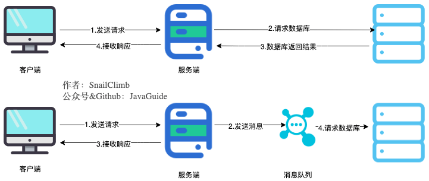

1 消息队列基础
1.1 MQ 概述
MQ全称 Message Queue(消息队列)，是在消息的传输过程中保存消息的容器。多用于分布式系统之间进行通信。
我们可以把消息队列看作是一个存放消息的容器，当我们需要使用消息的时候，直接从容器中取出消息供自己使用即可。
- 生产者：消息的发送方
- 消费者：消息的接收方
1.2 MQ 的优势
- 异步提速：提升用户体验和系统吞吐量

将用户的请求数据存储到消息队列之后就立即返回结果给用户，随后系统再异步对消息进行消费。
虽然用户请求数据写入消息队列之后就立即返回给用户了，但是请求数据在后续的业务校验、写数据库等操作中可能失败，因此使用消息队列进行异步处理之后，需要适当修改业务流程进行配合，比如用户在提交订单之后，订单数据写入消息队列，不能立即返回用户订单提交成功，需要在消息队列的订单消费者进程真正处理完该订单之后，甚至出库后，再通过电子邮件或短信通知用户订单成功，以免交易纠纷，比如我们平时手机订火车票和电影票的用户场景。
- 削峰填谷：提高系统稳定性

面对秒杀等短时间激增业务请求的高并发场景，可以将先将高并发产生的事务消息存储在消息队列中，然后后端服务再慢慢根据自己的能力去消费这些消息，这样就避免请求过多直接把后端服务打垮掉。
- 应用解耦：提高系统容错性和可维护性

如果模块之间都是直接调用，无疑增加了系统的耦合度，这让系统的维护和拓展变得麻烦，对一个模块功能的修改或者增加新的模块都会导致去修改原有模块。
引入消息队列后，各个模块都是面向消息队列传递业务的，模块的变动和新增只用在该模块自身上针对消息队列进行编码，而不需要和其他系统有耦合，这显然也提高了系统的扩展性。
1.3 MQ 的劣势
- 系统可用性降低：系统引入的外部依赖越多，系统稳定性越差。一旦 MQ 宕机，就会对业务造成影响，如何保证 MQ 的高可用？
- 系统复杂度提高：MQ 的加入大大增加了系统的复杂度，以前系统间是同步的远程调用，现在是通过MQ进行异步调用，如何保证消息没有被重复消费？怎么处理消息丢失情况？怎么保证消息传递的顺序性？
- 一致性问题：A 系统处理完业务，通过 MQ 给 B、C、D 三个系统发消息数据，如果 B 系统、C 系统处理成功，D 系统处理失败，如何保证消息数据处理的一致性?
1.4 MQ 的使用条件
使用 MQ 一般需要满足以下条件：
- 生产者不需要从消费者处获得反馈。引入消息队列之前的直接调用，其接口的返回值应该为空，这才让下层的动作还没做时上层可以继续往后走，即所谓异步成为了可能。
- 容许短暂的不一致性。
- 确实是用了有效果。即解耦、提速、削峰这些方面的收益，超过加入 MQ、管理 MQ 这些成本。
1.5 JMS & AMQP
AMQP，即 Advanced Message Queuing Protocol，一个提供统一消息服务的应用层标准高级消息队列协议（二进制应用层协议），是应用层协议的一个开放标准，为面向消息的中间件设计。基于此协议的客户端与消息中间件可传递消息，并不受客户端/中间件不同产品，不同的开发语言等条件的限制。
JMS 即 Java 消息服务(Java Message Service)应用程序接口，是一个 Java 平台中关于面向消息中间件的API，很多消息中间件都实现了JMS规范，例如 ActiveMQ，RabbitMQ 官方没有提供 JMS 的实现包，但是开源社区有。
1.6 常见的消息队列对比
2 RabbitMQ 基础
2.1 RabbitMQ 的主要概念
- Broker：接收和分发消息的应用，RabbitMQ Server就是 Message Broker。
- Virtual host：出于多租户和安全因素设计的，把 AMQP 的基本组件划分到一个虚拟的分组中，类似于网络中的 namespace 概念。当多个不同的用户使用同一个 RabbitMQ server 提供的服务时，可以划分出多个vhost，每个用户在自己的 vhost 创建 exchange/queue 等。
- Connection：publisher/consumer 和 broker 之间的 TCP 连接。
- Channel：如果每一次访问 RabbitMQ 都建立一个 Connection，在消息量大的时候建立 TCP Connection 的开销将是巨大的，效率也较低。Channel 是在 connection 内部建立的逻辑连接，即建立在 TCP 链接上的虚拟链接，如果应用程序支持多线程，通常每个 thread 创建单独的 channel 进行通讯，AMQP method 包含了 channel id 帮助客户端和 message broker 识别 channel，所以 channel 之间是完全隔离的，从而使得一个 TCP 被多个线程共享。Channel 作为轻量级的 Connection 极大减少了操作系统建立 TCP connection 的开销。
- Exchange：交换机，message 到达 broker 的第一站，根据分发规则，匹配查询表中的 routing key，分发消息到 queue 中去。常用的类型有direct (point-to-point), topic (publish-subscribe) and fanout (multicast)
- Queue：先进先出队列，消息最终被送到这里等待 consumer 取走。
- Binding：exchange 和 queue 之间的虚拟连接，binding 中可以包含 routing key。Binding 信息被保存到 exchange 中的查询表中，用于 message 的分发依据。
2.2 RabbitMQ 的工作模式
简单模式
- P: 生产者，也就是要发送消息的程序
- C: 消费者:消息的接收者，会一直等待消息到来
- queue: 消息队列，图中红色部分。类似一个邮箱，可以缓存消息，生产者向其中投递消息，消费者从其中取出消息
Work queues 工作队列模式
简单模式基础上增加了多个消费者，共同消费同一个队列中的消息
- 消费者之间采用轮询的方式来消费
- 应用场景：对于任务过重或任务较多情况使用工作队列可以提高任务处理的速度，例如短信服务部署多个， 只需要有一个节点成功发送即可
Pub/Sub 订阅模式
在订阅模型中，多了一个 Fanout 类型的 Exchange 角色，而且过程略有变化:
- P: 生产者，也就是要发送消息的程序，但是不再直接发送到队列中，而是发给X (Exchange)
- C: 消费者，消息的接收者，会一直等待消息到来
- Queue: 消息队列，接收消息、缓存消息
- Exchange: 交换机(X)。一方面，接收生产者发送的消息。另一方面，知道如何处理消息，例如递交给某个特别队列、递交给所有队列、或是将消息丢弃。到底如何操作，取决于Exchange的类型。Exchange有常见以下3种类型:
- Fanout: 广播，将消息交给所有绑定到交换机的队列
- Direct: 定向，把消息交给符合指定routing key 的队列
- Topic: 通配符，把消息交给符合routing pattern (路由模式) 的队列
- Exchange(交换机)只负责转发消息，不具备存储消息的能力，因此如果没有任何队列与 Exchange 绑定，或者没有符合路由规则的队列，那么消息会丢失!
Routing 路由模式
- Exchange 为 Direct 类型，队列与交换机的绑定，不能是任意绑定了，而是要指定一个 RoutingKey (路由key)
- 消息的发送方在向Exchange发送消息时，也必须指定消息的 RoutingKey
- Exchange 不再把消息交给每一个绑定的队列，而是根据消息的 Routing Key 进行判断，只有队列的 Routingkey 与消息的 Routing key 完全一致，才会接收到消息
Topics 通配符模式
- Exchange 为 Topic 类型，与 Direct 相比，都是可以根据 RoutingKey 把消息路由到不同的队列，只不过 Topic 类型 Exchange 可以让队列在绑定 Routing key 的时候使用通配符!
- Routingkey 一般都是有一个或多个单词组成，多个单词之间以”.”分割，例如: item.insert
- 通配符规则: # 匹配一个或多个词，* 匹配不多不少恰好1个词，例如: item.# 能够匹配 item.insert.abc 或者 item.insert，item.* 只能匹配 item.insert
3 RabbitMQ 高级
3.1 消息的可靠性
RabbitMQ 主要有4种手段来保证消息的可靠性：
持久化
- exchange要持久化
- queue要持久化
- message要持久化
生产方确认 Confirm
消费方确认 Ack
Broker 高可用
消息的可靠投递
在使用 RabbitMQ 的时候，作为消息发送方希望杜绝任何消息丢失或者投递失败场景。RabbitMQ 为我们提供了两种方式用来控制消息的投递可靠性模式。
- confirm 确认模式
- return 退回模式
rabbitmq 整个消息投递的路径为:producer –> rabbitmq broker –> exchange –> queue –> consumer
- 消息从 producer 到 exchange 会返回一个 confirmCallback。
- 消息从 exchange 到 queue 投递失败会返回一个 returnCallback。
我们将利用这两个 callback 控制消息的可靠性投递：
针对confirmCallback：
- 设置 ConnectionFactory 的 publisher-confirms=”true” 开启 确认模式。
- 使用 rabbitTemplate.setConfirmCallback 设置回调函数。当消息发送到 exchange 后回调 confirm 方法，在方法中判断ack，如果为true，则发送成功，如果为false，则发送失败，需要处理。
针对returnCallback：
- 设置ConnectionFactory的publisher-returns=”true” 开启 退回模式。
- 使用 rabbitTemplate.setReturnCallback 设置退回函数，当消息从 exchange 路由到 queue 失败后，如果设置了 rabbitTemplate.setMandatory(true) 参数，则会将消息退回给 producer，并执行回调函数 returnedMessage。
Consumer Ack
Ack 指 Acknowledge，表示消费端收到消息后的确认方式。 有三种确认方式:
- 自动确认: acknowledge=”none”
- 手动确认: acknowledge=”manual”
- 根据异常情况确认: acknowledge=”auto”，(这种方式使用麻烦，不作讲解)
其中自动确认是指，当消息一旦被 Consumer 接收到，则自动确认收到，并将相应 message 从 RabbitMQ 的消息缓存中移除。
但是在实际业务处理中，很可能消息接收到，业务处理出现异常，那么该消息就会丢失。如果设置了手动确认方式，则需要在业务处理成功后，调用 channel.basicAck()，手动签收，如果出现异常，则调用 channel.basicNack() 方法，让其自动重新发送消息。
3.2 消费端限流
- 在 rabbit:listener-container 中配置prefetch属性设置消费端一次拉取多少消息
- 消费端的确认模式一定为手动确认。acknowledge=”manual”
3.3 TTL
TTL 全称 Time To Live(存活时间/过期时间)，当消息到达存活时间后，还没有被消费，会被自动清除。
RabbitMQ可以对特定消息设置过期时间，也可以对整个队列 (Queue) 设置过期时间。
- 设置队列过期时间使用参数: x-message-ttl。单位: ms(毫秒)，会对整个队列消息统一过期。
- 设置消息过期时间使用参数: expiration。单位: ms(毫秒)，当该消息在队列头部时(消费时)，会单独判断
这一消息是否过期。 - 如果两者都进行了设置，以时间短的为准。
3.4 死信队列
Dead Letter Exchange(死信交换机)，当消息成为Dead message后，可以 被重新发送到另一个交换机，这个交换机就是DLX。
消息成为死信的三种情况:
- 队列消息长度到达限制
- 消费者拒接消费消息，basicNack/basicReject，并且不把消息重新放入原目标队列，requeue=false
- 原队列存在消息过期设置，消息到达超时时间未被消费
死信交换机和死信队列的创建和普通的没有区别，但是需要将普通队列绑定到死信交换机:
- 给队列设置参数: x-dead-letter-exchange 和 x-dead-letter-routing-key
3.5 延迟队列
延迟队列，即消息进入队列后不会立即被消费，只有到达指定时间后，才会被消费。
比如需求:
- 下单后，30分钟未支付，取消订单，回滚库存。
- 新用户注册成功7天后，发送短信问候。
很可惜，在RabbitMQ中并未提供延迟队列功能，但是可以使用「TTL+死信队列」组合实现延迟队列的效果。
- 注意 Consumer 监听的队列是死信队列！
3.6 日志与监控
日志
RabbitMQ默认日志存放路径: /var/log/rabbitmq/rabbit@xxx.log
日志包含了 RabbitMQ 的版本号、Erlang 的版本号、RabbitMQ 服务节点名称、cookie 的 hash 值、 RabbitMQ 配置文件地址、内存限制、磁盘限制、默认账户 guest 的创建以及权限配置等等。
监控
- Web 控制台的图形化界面监控
- 命令行指令监控：
3.7 消息追踪
在使用任何消息中间件的过程中，难免会出现某条消息异常丢失的情况。对于 RabbitMQ 而言，可能 是因为生产者或消费者与 RabbitMQ 断开了连接，而它们与 RabbitMQ 又采用了不同的确认机制;也有可能是因为交换器与队列之间不同的转发策略;甚至是交换器并没有与任何队列进行绑定，生产者又不感知或者没有采取相应的措施；另外 RabbitMQ 本身的集群策略也可能导致消息的丢失。这个时候就需要有一个较好的机制跟踪记录消息的投递过程，以此协助开发和运维人员进行问题的定位。
在 RabbitMQ 中可以使用 Firehose 和 rabbitmq_tracing 插件功能来实现消息追踪。
3.8 RabbitMQ 应用问题
消息可靠性保障
需求：100%确保消息发送成功
方法：消息补偿机制
消息幂等性保障
需求：幂等性指一次和多次请求某一个资源，对于资源本身应该具有同样的结果。也就是说，其任意多次执行对资源本身所产生的影响均与一次执行的影响相同。在 MQ 中指，消费多条相同的消息，得到与消费该消息一次相同的结果。
方法：乐观锁机制
参考资料：B站黑马程序员RabbitMQ教程
最后更新： 2023年01月01日 20:04
原始链接： http://muquanrui.com/2022/08/21/Programming/Middleware/RabbitMQ%E5%85%AB%E8%82%A1%E6%96%87/